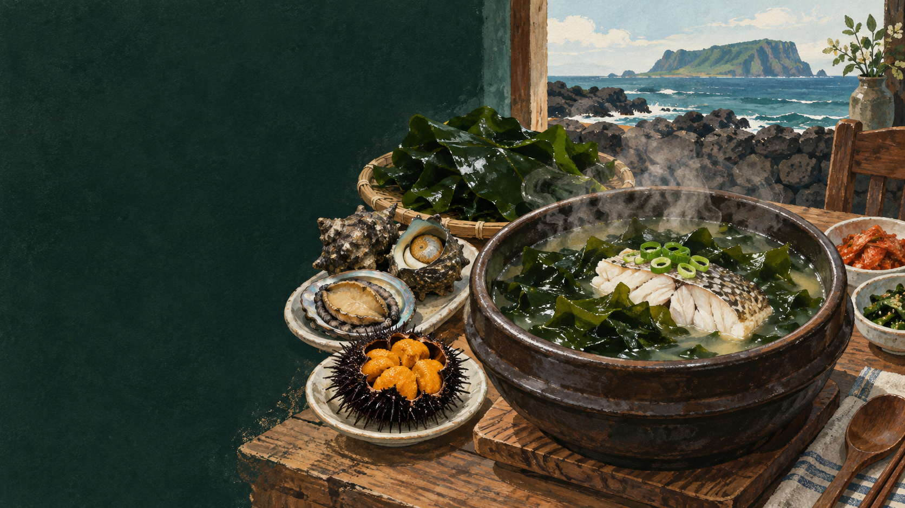

은은한 기름
살과 뼈에서 맑고 깊은 맛이 납니다.
 제주에서는 이 재료를
제주에서는 이 재료를
제주 음식의 생활문화를 바탕으로 제작한 기록화 · 생성 이미지
제주에서는 미역과 생선·성게·조개를 가까운 바다에서 얻을 수 있었습니다. 소고기가 늘 흔한 재료가 아니었던 생활에서 옥돔 같은 생선은 미역국에 감칠맛과 지방을 내는 자연스러운 선택이었습니다.
생선마다 국물이 다릅니다. 옥돔은 맑고 은은한 기름을, 성게는 단맛과 바다 향을, 조개는 깔끔한 감칠맛을 냅니다. 선도와 손질이 비린 맛을 줄이는 핵심입니다.
미역을 불리고 생선이나 성게·조개를 더해 국물을 내는 흐름을 봅니다.
채취·건조한 미역을 불려 씻습니다.
비늘·내장·핏물을 깨끗이 제거합니다.
집에 따라 미역을 볶거나 바로 국물을 냅니다.
생선이 부서지지 않게 끓입니다.
소금·집간장으로 재료 맛을 남깁니다.
같은 미역도 어떤 해산물을 만나느냐에 따라 향과 기름, 감칠맛이 달라집니다.
살과 뼈에서 맑고 깊은 맛이 납니다.
적은 양도 국물에 진한 바다의 향을 더합니다.
짧게 익혀 질겨지지 않도록 합니다.
유명한 메뉴보다 왜 이런 재료와 방식이 제주 생활에 필요했는지를 먼저 묻습니다.
구하기 쉬웠던 재료와 국물 맛, 출산·생일의 쓰임을 중심으로 비교합니다.
생선·성게·조개
소고기
바다 향과 재료별 차이
고기와 참기름의 익숙한 향
비늘·핏물·내장 제거
핏물과 부위 선택
선호하는 해산물로 갈림
양지·국거리 등 부위 차이
미역국이 출산과 생일의 음식이라는 큰 틀 안에서도 무엇을 넣는지는 환경과 형편에 따라 달랐습니다. 제주식 미역국은 섬의 재료 지도를 보여 줍니다.
비린 맛을 강한 양념으로 덮기보다 신선한 재료, 핏물 제거, 과하지 않은 가열로 다룹니다.
미역국의 중심은 소고기가 아니라, 미역과 그 지역에서 구할 수 있었던 감칠맛입니다.
옥돔·성게·조개 사용은 지역과 집안에 따라 다릅니다. 하나의 제주식으로 통일하지 않고 누구의 방식인지 밝혀 기록합니다.
지역·가정·생산자에 따라 설명과 조리법이 다를 수 있습니다. 현장 인터뷰를 인용할 때는 당사자의 사용 동의를 받습니다.